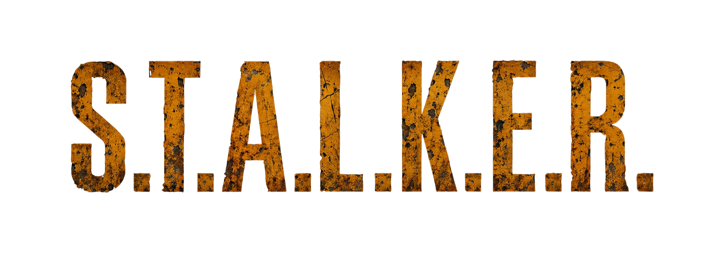

Български превод на игрите от поредицата S.T.A.L.K.E.R. и техните модификации.
Добре дошли в страницата на българската локализация на S.T.A.L.K.E.R.
Проектът има за цел да направи света на Зоната достъпен за българските играчи на родния им език, като запази атмосферата, терминологията и духа на оригиналните игри.
Преводите в тази категория са завършени и готови за използване. При наличност тук ще бъдат публикувани и съответните файлове и инструкции за инсталация.
Преводите са завършени, но в момента се извършва преглед и редакция на текста, терминологията и отделните елементи на локализацията.
Работата по тези проекти е в ход. Превеждат се текстовете и съдържанието постепенно се обработва и уеднаквява с установената терминология на българската локализация.
Тези проекти са предвидени за бъдеща локализация, но работата по тях все още не е започнала.
Тук ще бъдат публикувани файловете на готовите български локализации, заедно с необходимата информация за тяхното инсталиране и използване.
Всеки превод ще бъде публикуван с информация за съответната игра или модификация, версията на локализацията и датата на последната актуализация.
С течение на развитието на проекта тук ще бъдат добавяни нови преводи и актуализирани версии на вече публикуваните локализации.
Ако имате въпроси относно преводите, откриете грешка или искате да споделите мнение и предложения, можете да се свържете с мен.
Обратната връзка е важна за развитието на проекта и за подобряването на българските локализации.
Допълнителна информация и начини за връзка ще бъдат публикувани тук.